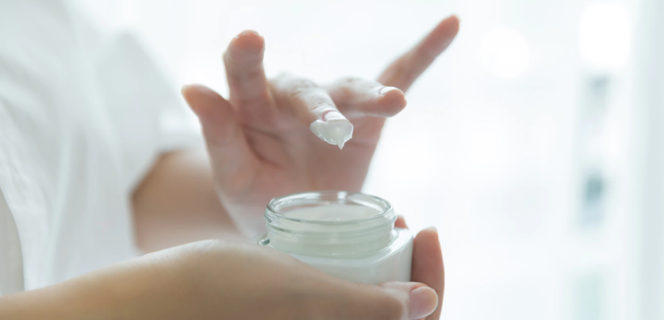

Метрогил ®
Метрогил / Блог / Зимние путешествия без проблем с кожей
Зимние путешествия без проблем с кожей

11.12.2022

1 034

5 мин
Путешествия в зимний период, как правило, связаны с пребыванием на ветру, сухом и холодном воздухе.
Не важно, наслаждаетесь ли вы видами Карелии или встречаете Новый гГод в Суздале, – проблемная кожа нуждается в особом, бережном отношении.
В холодное время года воздух становится сухим. В ответ на это кожные железы вырабатывают больше себума (кожного сала).
Это закупоривает поры, и образуются новые очаги воспалений.
Вот почему зимой часто происходит обострение акне и розацеа.
Отсутствие ультрафиолетовых лучей снижает иммунную систему.
Считается также, что осенью и зимой мы испытываем больше стресса, нам недостаточно витаминов, и, как следствие, появляются новые воспаления на коже.
Но зима и чувствительная кожа – не повод отказывать себе в новых впечатлениях.
Достаточно обеспечить заботу и правильный уход, и в этом нам помогут несколько простых советов.
Защищайте лицо от ветра и холода
Для защиты кожи лица носите шапки и шарфы из натуральных материалов, но желательно избегать шерсти: – это грубое волокно.
Оно провоцирует раздражение. Важно следить за чистотой зимних атрибутов и вовремя их стирать.
Не забывайте, что они впитывают все микровыделения организма: себум, перхоть, кусочки кожи. Поэтому нуждаются в регулярной стирке.
Поддерживайте водный баланс
Зимой совсем не хочется пить. Но важно соблюдать питьевой режим, чтобы избежать обезвоживания.
Помним, что недостаток влаги приводит к сухости кожи, а сухая кожа защищается выработкой кожного сала. В результате опять наблюдаем прыщи.
Применяйте адекватный уход

Часто зимой мы переходим на жирные кремы, в составе которых есть вазелин или глицерин.
Они покрывают лицо тонкой пленкой, из-за которой нарушается естественный влагообмен.
Выбирайте кремы и лосьоны, способные восстанавливать гидролипидный баланс кожи – это защитный барьер,
который охраняет ееё от агрессивных воздействий ветра или холода.
Иногда лучше не менять уходовые средства и не экспериментировать, применяйте то, что уже проверено и точно вам подходит.
Откажитесь от матирующих средств
Как бы ние хотелось красиво выглядеть на фотографиях в путешествии, здоровье кожи важнее. Тональные кремы, румяна и прочая маскирующая косметика сушат кожу. Зимой до 60 % людей с проблемной кожей сталкиваются с обострением высыпаний. Использование матирующей косметики в сочетании с низкими температурами ухудшает лимфоотток и иммунную защиту кожи, закрывает протоки сальных желез.
Чем меньше средств вы наносите на кожу, – тем лучше. В идеале выбирайте минеральную гипоаллергенную косметику, и не прибегайте к многослойному макияжу.
Но если все-таки почувствовали, что ваша кожа вновь воспаляется и нуждается в терапии, держите в косметичке «Метрогил® А» – это средство вовремя лечит и курирует высыпания, чтобы вы и дальше могли наслаждаться зимним отдыхом.
Делайте себя красивыми и здоровыми изнутри
Зимой организм тратит много энергии, для того, чтобы сохранить тепло.
Поэтому правильное питание в холодное время года – самая важная составляющая профилактики акне и розацеа.
Употребляйте в пищу сложные углеводы, содержащиеся в бобовых и зерновых культурах, а быстрые углеводы, которые содержатся в выпечке, сладостях и газировке, – исключите.
Откажитесь от трансжиров. Они и так ничего хорошего в себе не содержат, а человеку с жирной кожей только добавят ненужного блеска и проблем.
Компенсируйте нехватку сезонных витаминов употреблением зеленых салатов и овощей. Эти продукты богаты витаминами и антиоксидантами.
А если вам кажется, что правильное питание – это сложно и невкусно, воспользуйтесь нашими подсказками с интересными с рецептами – ссылка.
Вас может заинтересовать

здоровье
К какому врачу обратиться с подозрением на розацеа?

психология
«Не хочу смотреть на себя в зеркало» или как справиться с акне

здоровье
Может ли диета помочь при розацеа

КИНО
3 героини с «дефектами» внешности